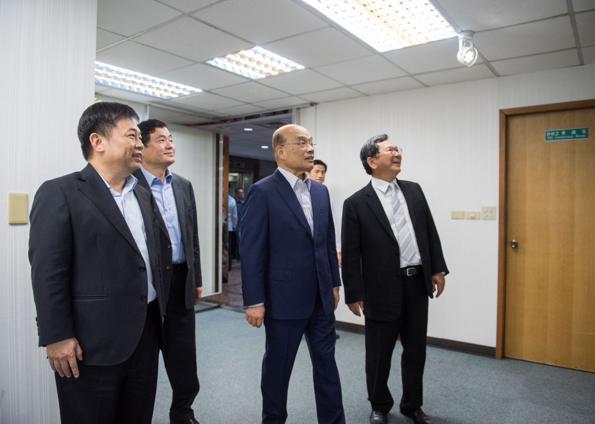
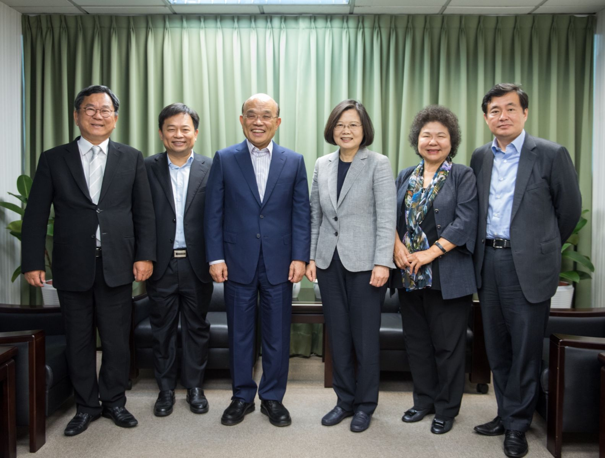

2018-04-12
蔡英文主席與蘇貞昌前院長會面會後新聞稿
昨(11)日中執會，選對會一致通過建議主席徵召蘇貞昌前院長代表民進黨參選新北市長。蔡英文主席今日於中央黨部與蘇貞昌前院長會面，就新北市長候選人徵召一事交換意見。會中，陳菊市長、林錫耀及陳明文召集人就選對會程序、年底選戰戰略佈局，特別是新北市將扮演領頭羊的重要性跟蔡主席報告。
蔡英文主席高度肯定蘇貞昌前院長在台北縣長任內的卓越表現，是民進黨「綠色執政、品質保證」的標竿。他的政績，至今仍讓新北市民非常懷念。
蔡主席向蘇前院長表示，新北市的選戰是民進黨今年選戰佈局的重中之重，也是帶動總體氣勢的關鍵。經過選對會的評估，蘇前院長不管個人名望、與新北市的淵源，都是勝選機率最高、民進黨最強的候選人。在年底勝選的總目標下，希望蘇貞昌前院長能夠不計個人榮辱，為新北市、台灣及民進黨扛起責任。
對此，蘇貞昌前院長強調，從過去到現在，他都希望給青壯世代機會。因此，他陪著吳秉叡委員走過新北市每一個鄰里，爭取市民的支持。然而，如果大家認為他是最有勝選機會的候選人，作為一個創黨黨員，為了大局，為了民進黨、新北市和台灣，他願意承擔責任。
蘇貞昌前院長也表示，一進入中央黨部，他停下腳步，看著門口的創黨18人小組的照片。他的心情與陳菊市長一樣，只要黨、台灣需要，他就義無反顧、承擔責任，這就是作為民主進步黨黨員的DNA。

他表示，這一年多來，他走遍新北市每一個里，重新看到他擔任縣長八年努力付出，而改頭換面、脫胎換骨的台北縣，更看到市民對他的懷念跟支持。基於對市民的感情和責任，他會接受蔡英文主席的徵召，全力以赴。
蘇貞昌前院長相信年底的選戰，一定要全黨團結才能獲得勝利，也才能支持中央、持續推動改革，這也是他一貫的主張。
選對會召集人林錫耀也在會中報告，將於4月25日召開中執會，完成徵召程序。
此次會面時間約一小時，陪同人員有高雄市長陳菊、選對會召集人林錫耀、陳明文，中央黨部秘書長洪耀福。
